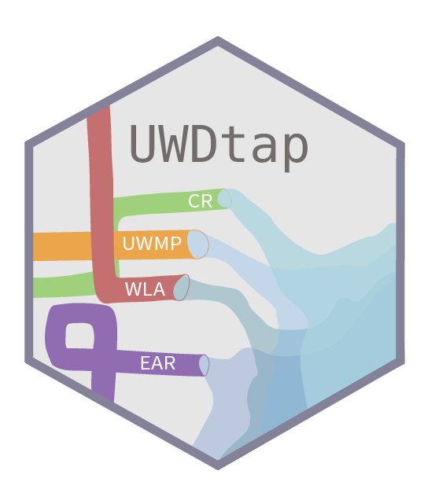

UWDtap 
What is UWDtap?
UWDtap connects four distinct water reporting datasets to allow users to download and compile urban water data across California State Department of Water Resources (DWR) and California State Water Resources Control Board (SWRCB) reporting requirements with a single function call. UWDtap pulls data from the following reports:
- Conservation Report (CR)
- Electronic Annual Report (EAR)
- Urban Water Management Plan (UWMP)
- Water Loss Audit (WLA)
Many retail and wholesale water agencies across California are required to submit these reports to DWR and SWRCB. To access and use data, a user must download many excel or text files from four distinct web portals. UWDtap makes data across these four urban water reports easily accessible and interoperable. UWDtap provides the groundwork for innovative analysis that could be used to support data driven decision making, the development of dashboards and data visualizations, and also provides a helpful tool that could be used for data quality checks. The goal of this package is to provide a service that pulls data and performs basic standardization for analysis ready data.
Installation
remotes::install_github("flowwest/UWDtap")Basic Usage
UWDtap exposes several useful functions to pull and visualize data urban water reporting data. The main function in the package is pull_data(),
# download data from all reporting requirements for 2020
urban_water_data <- pull_data(year_selection = 2020)The data returned,
urban_water_data |> glimpse()
Rows: 1,120,132
Columns: 9
$ report_name <chr> "UWMP", "UWMP", "UWMP", "UWMP", "UWMP", "UWMP", "UWMP", "UWMP", "UWMP", "UWMP", "UWMP", "UWMP", "UWMP", …
$ pwsid <chr> "CA3610001", "CA3610001", "CA3610001", "CA3610001", "CA3610001", "CA3610001", "CA3610001", "CA0110001", …
$ supplier_name <chr> "Adelanto City Of", "Adelanto City Of", "Adelanto City Of", "Adelanto City Of", "Adelanto City Of",…
$ year <dbl> 2020, 2020, 2020, 2020, 2020, 2020, 2020, 2020, 2020, 2020, 2020, 2020, 2020, 2020, 2020, 2020, 2020, 20…
$ month <dbl> NA, NA, NA, NA, NA, NA, NA, NA, NA, NA, NA, NA, NA, NA, NA, NA, NA, NA, NA, NA, NA, NA, NA, NA, NA, NA, …
$ category <chr> "demand", "demand", "demand", "demand", "demand", "demand", "demand", "demand", "demand", "demand", "dem…
$ use_type <chr> "multi-family", "commercial", "industrial", "landscape", "other potable", "losses", "single family", "in…
$ volume_af <dbl> 162, 809, 0, 82, 1, 987, 2606, 2410, 4245, 1064, 5463, 83, 4483, 1569, 0, 7190, 463, 18762, 7813, 2994, …
$ use_group <chr> "residential", "commerical industrial institutional", "commerical industrial institutional", "landscape"…Summarize these data across all years for a specific category and report,
# summarize data from all reporting requirements for total demand
demand_summary <- pull_data_summary(category_selection = "demand total")demand_summary |> glimpse()
Rows: 10,150
Columns: 9
Groups: report_name, year, month, category [248]
$ report_name <chr> "UWMP", "UWMP", "UWMP", "UWMP", "UWMP", "UWMP", "UWMP", "UWMP", "UWMP", "UWMP", "UWMP…
$ year <dbl> 2015, 2015, 2015, 2015, 2015, 2015, 2015, 2015, 2015, 2015, 2020, 2020, 2020, 2020, 2…
$ month <dbl> NA, NA, NA, NA, NA, NA, NA, NA, NA, NA, NA, NA, NA, NA, NA, NA, NA, NA, NA, NA, NA, N…
$ category <chr> "demand total", "demand total", "demand total", "demand total", "demand total", "dema…
$ use_type <chr> "potable and raw water", "potable and raw water", "potable and raw water", "potable a…
$ n <int> 530, 530, 530, 530, 530, 530, 530, 530, 530, 530, 507, 507, 507, 507, 507, 507, 507, …
$ use_group <chr> "other", "other", "other", "other", "other", "recycled", "recycled", "recycled", "rec…
$ statistic <chr> "mean", "median", "q25", "q75", "sd", "mean", "median", "q25", "q75", "sd", "mean", "…
$ volume_af <dbl> 28877.4750, 8877.0000, 3384.6097, 21984.5000, 141415.9556, 2008.1464, 593.5650, 104.0…Visualize these data for a specific category and pwsid,
urban_water_data |>
plot_data(data = data, category_selection = "demand",
pwsid_selection = "CA0710001")
Note: The package does not QA/QC data. It does preform basic mapping of fields so that data can be compared across reports.